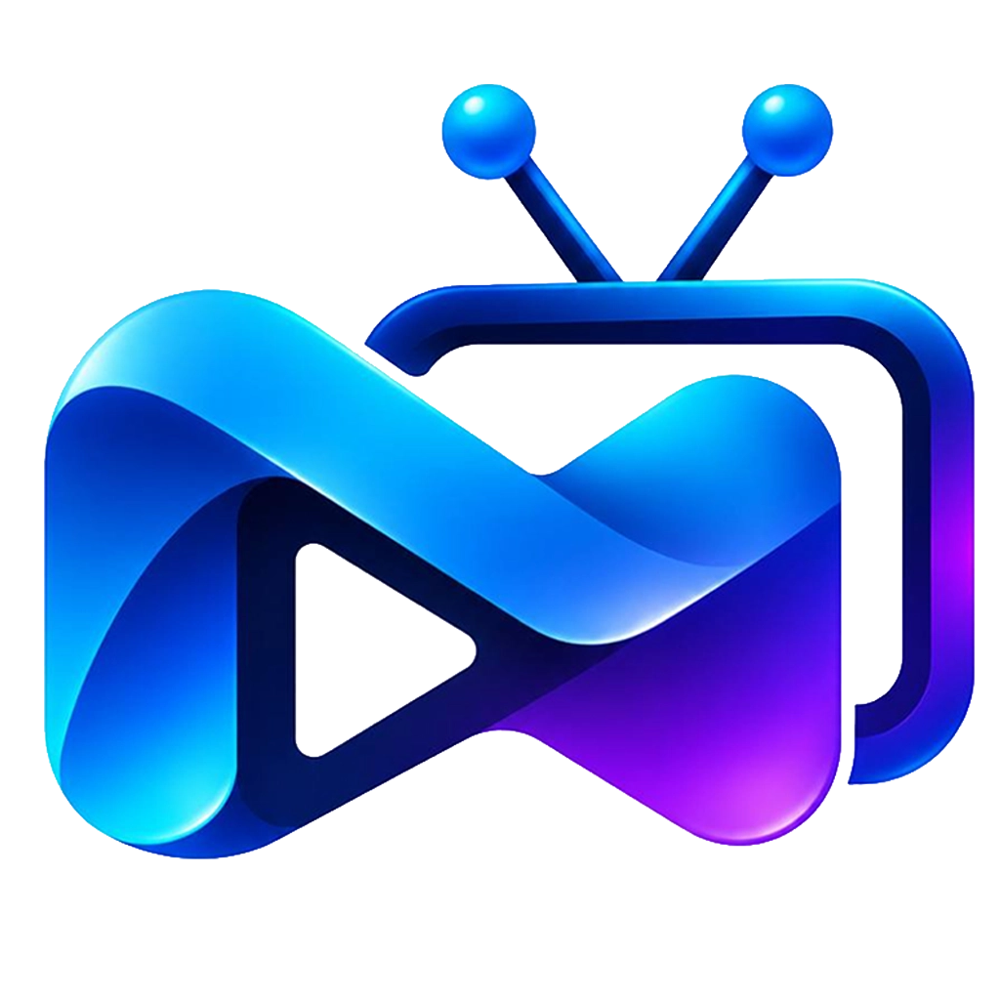
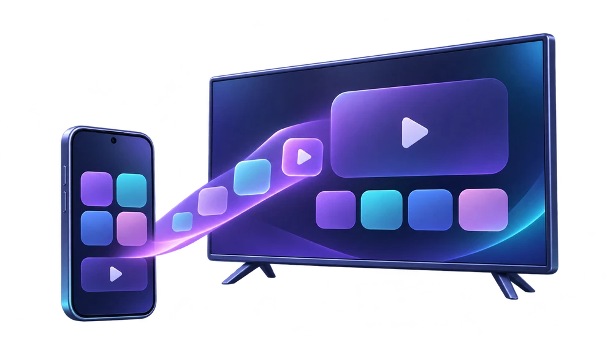

orph Bridge
تطبيقات موبايلك على التلفزيون، والتحكّم بالريموت.
افتح Bridge على الموبايل واختار هذا التلفزيون. بيانات الاتصال بتوصل تلقائيًا.
لا تكتب كود أندرويد هنا. خانة تجهيز الموبايل بتظهر بعد الربط، لما تبدأ التجهيز من الموبايل.